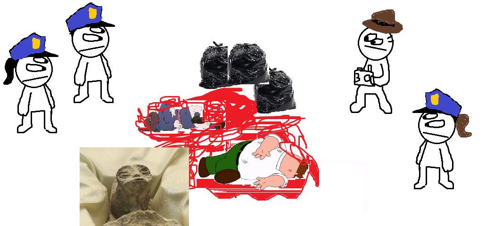

17/08/2024
Despues de reportes de gente desaparecida:
SE ENCUENTRAN RESTOS HUMANOS DENTRO DE VERTEDERO MUNICIPAL
Trabajadores encuentran 2 cuerpos de personas desaparecidas, incluído un hombre trabajador, una estudiante, y un alienigena
El día 16 de este mes, dos encargados del vertedero de Bariloche, María Rosa Sánchez y Raúl González, se encontraban en un día de trabajo no tan fuera de lo ordinario, cumpliendo su labor como empleados del gobierno.
Luego de cierta labor moviendo docenas de bolsas de basura, aproximadamente a las 8:23 de la mañana, María llamó a su compañero para ayudarla a mover una bolsa de basura que pesaba extrañamente más de lo normal. Cuando se acercaron a la bolsa, descubrieron un olor pútrido que se desprendía de esta y de tres bolsas de polietileno más.

Las tres bolsas encontradas - Raul Perez, Forense
Cuando los dos compañeros contactaron a su supervisora, Juana Flores, esta procedió a acercarse a las tres bolsas. Luego de que Juana abriera las bolsas una por una, encontraron una imagen de una película de terror; tres cuerpos mutilados se encontraron dentro de estas, una de las víctimas siendo no identificable debido al estado de pudrimiento en el que se encontraba. Fue una vista horrible, tres cuerpos, una mujer joven, un hombre de mediana edad y un ser no identificable, todos mutilados y llenos de sangre.
Los tres trabajadores, después de un justificado ataque de pánico, procedieron a llamar a las autoridades de Bariloche, las cuales llegaron rápido al lugar con forenses. Se recomienda discreción al ver las siguientes imágenes, ya que su contenido es altamente grotesco y sangriento, no recomendable para menores de catorce años.

Las autoridades encontrando los cuerpos - Raul Perez, Forense
Luego de que los forenses llegaran a la escena, estos aislaron los tres cuerpos y empezaron el proceso de identificación. El primer cuerpo, un hombre blanco de mediana edad con ropa casual, complexión robusta, de un metro noventa y siete millones de kilogramos, fue identificado como Peter Löwenbräu Griffin Sr., mejor conocido como Peter Griffin, quien había llegado a la zona para mantener a su segunda familia a escuendas de la primera, la que tiene con su esposa Lois… El segundo cuerpo, una joven asiática con ropa de bruja, de un metro sesenta, cuarenta y seis kilogramos, fue identificada como Atsuko Kagari, una estudiante de bruja que había llegado a la zona para recolectar materiales para una poción. Y el tercer cuerpo es un caso especial, siendo no identificado como un humano, de un metro veinte y con rastros de sangre aquamarina azul. Los científicos informan que investigar a esta nueva criatura podría ser "un gran hito de la ciencia", pero como el gobierno no sabe lo que significa la palabra "hito", todavía no aprueban el estudio de la misma. Los científicos que la encontraron le pusieron "Cosito" por seudonimo.

Foto del documento de los 3 individuos
Los investigadores están trabajando arduamente en el caso. Testigos reportan haber visto a un individuo sospechoso en las cercanías: un hombre musculoso con mandíbula prominente. La policía ha elaborado un retrato hablado basado en estas descripciones.

Sketch policiaco del asesino - Luján Maciel
Aunque la identidad y paradero del presunto responsable permanecen desconocidos, las autoridades instan a la población a mantener la calma. El perfil del agresor y las características peculiares de las víctimas sugieren que se trata de casos aislados. No obstante, se recomienda a los ciudadanos estar alerta y reportar cualquier actividad sospechosa. La investigación continúa en curso, y se proporcionarán actualizaciones a medida que surja nueva información. La seguridad de la comunidad es la prioridad principal en estos momentos de incertidumbre. Esta nota fue redactada por Santiago González de la firma "La voz de Jerry", muchas gracias.